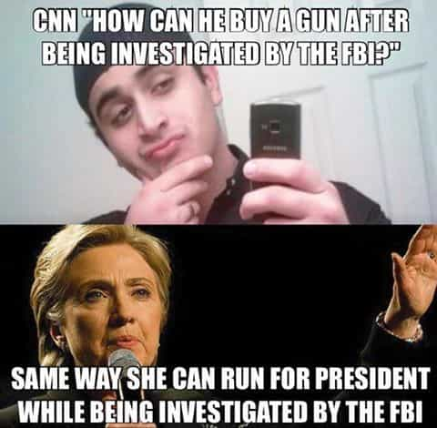
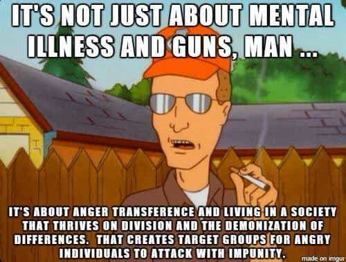
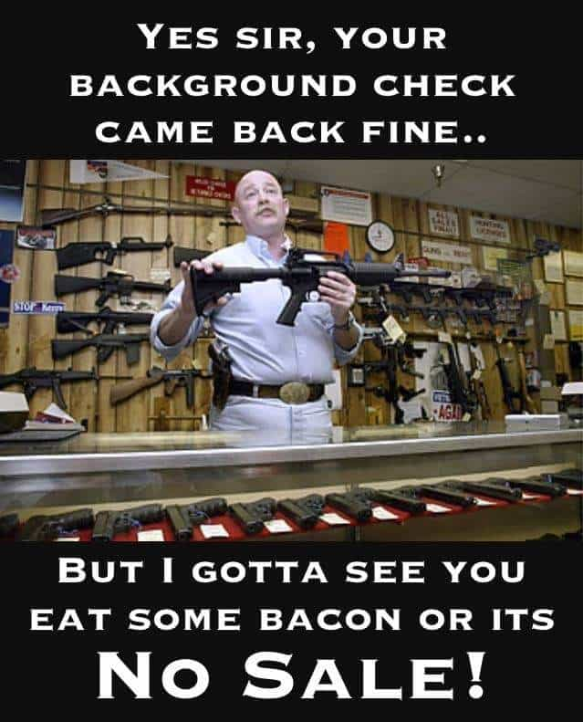

Luke Stranahan is an engineer by trade and an armed patriot by inclination. He writes for Return of Kings as a leisure pursuit and an attempt to do his part to help reverse the slide into moral decrepitude of modern society. Follow him on Twitter.


“You never let a serious crisis go to waste. And what I mean by that it’s an opportunity to do things you think you could not do before.” — Rahm Emanuel.
The left is renewing their calls for gun control as they try to salvage their narrative from the damage of their Islamic sacred cow massacring their LGBT one. Across their spectrum, so many people know so little about firearms, rights of American citizens, and the goals of radical Islam for the world. All they see is an opportunity to further accomplish their goals of control of the populace.
Anyone with a social media account can broadcast their thoughts to the world, and their ignorance breeds with itself and makes yet more. We at ROK have the opportunity to inject some reason into the insanity and keep the liberals from grabbing more control.
One would expect some mental introspection from the left. It’s Gay Pride month, the attack was at the supposedly trendiest gay bar in Orlando, and the shooter reportedly was gay and had been there before.
Omar Mateen was Islamic, had ties to a fundamentalist cleric, was of Afghani descent, and even swore to ISIS. If this had been a terrorist attack against Christians, or conservatives, not one damn would have been given by Barack Obama Inc., and his vaunted Muslims would have been spared any criticism.
However, the victims were all presumably gay, which makes them matter to the left agenda. It’s hard to choose with which flag you should color your Facebook picture; the ISIS flag, or a rainbowed Lake Eola.

The solution is the same as it always is for the left; double down on some other part of your narrative, and that’s gun control. Never mind that Mateen also had bombs and a pistol on him, and was a hateful man blinded by religious fury to kill people of a legal sexual preference, let’s blame the rifle he used instead.
If we compare the ISIS attacks in Paris and in Brussels to this attack in Orlando, we learn a few things. The Paris terrorists used suicide bombs and AK pattern rifles, both of which are illegal in Europe. The Brussels terrorists used bombs made of explosives presumably illegal in Europe.
However, the semi-automatic carbine used in this attack was legal to purchase by citizens who pass the NICS background check to buy. If you have no criminal record, or a history of mental illness or instability, you can buy one wherever they are sold.
Mateen was of legal status to purchase firearms, even though he had ties to radical clerics and Islamic fundamentalism. His Floridian Concealed Weapons Permit should never have been issued (or at least revoked), and he should have failed the NICS check, but, thanks to the policies of the left, radical Islam is NOT considered a mental illness or reason to deny a firearms sale, nor is it enough to flag your background check in the employment of a large security company. G4S, Mateen’s employer, claims that they saw nothing of his radicalism.
Mateen also was rejected by a gun store a month prior to the shooting for wanting large amounts of ammunition, body armor, and speaking a foreign language into a phone while he was there. The owners denied his sale and contacted the FBI, who did nothing.

It is illegal to carry into a bar in Florida. I hold a Florida CWP, and, just like most concealed carry permits, you cannot take it into schools, government buildings, or any place where alcohol is the primary product sold.
Murder always has been illegal. The only forms of killing someone that are legal are: military action, self-defense, execution by governmental authority, and abortion. The core problem with using control over a weapon to prevent a crime with that weapon is that the criminal will simply find an illegal way to get one, or use a different weapon.
If someone mows down ten Black Lives Matter thugs with his car, are you going to ban his vehicle from private ownership? What about two men arguing and one picks up a rock and kills him? Are rocks now illegal? Dead is dead, no matter the weapon.
Would have allowing guns in bars and other “gun free zones” have stopped this massacre? Probably not in this case, but usually, in any public gathering place in Florida where firearms are allowed to be carried and like-minded people are there, at least someone, hopefully multiple people, would be shooting back within ten seconds.
This country was founded on decent people having autonomous rule. People self-governed, and, if they didn’t like what you were trying to pull, they shot you. This went for criminals and the Crown Regulars. Decent, armed people would’ve shot Omar Mateen shortly after he pulled out his rifle. Yes, a rifle would beat a handgun, but it wouldn’t have beaten multiple handguns, and heroes would have gone down swinging instead of being forced to hide.
The left doesn’t want decent armed people. They don’t want this because good people who have a means at their disposal to resist bullshit have the annoying habit of resisting ALL bullshit that comes their way, and they don’t discriminate between governmental oppression and criminal acts. The left wants to push their authoritarian agenda on you free men, take your income and your kids, promote their protected classes, and your having the ability to fight back is not in their playbook.

The Second Amendment was written for the purpose of keeping the population armed to resist the abuses of an over-reaching government. “A well regulated Militia, being necessary to the security of a free State, the right of the people to keep and bear Arms, shall not be infringed.”
This means organized groups of local men protecting their homes and interests. Any time there’s a natural disaster, and people patrol for looters, that’s a militia in the Founders’ sense of the word.
“A free state” is why the Amendment exists. We have this right protected by the Constitution so that we can be free from people trying to kill or control us. A man being persecuted for his sexual preference by an Islamic terrorist would definitely be covered.
This amendment means have and carry guns. Arms means handheld firearms of modern design, both then and now. One of the favorite leftist tactics is to gradually restrict your rights. They like to “compromise” by agreeing since they want all your rights gone, and you want to keep them all, that you should “compromise” by giving up some of them. You need to push the OTHER way, for the abolishment of gun free zones so that we can protect ourselves always.

Even when the radical portions of the religion want Sharia Law implemented worldwide (including the killing of homosexuals, slavery of women, and enslavement of non-Muslims), the left adores the very people who would conquer and kill them. The idea of “moderate Muslims” being good people is not always true, and is something to be verified for each one you encounter individually.
This guy was an Islamic terrorist with clear ties to radical Islam. His background checks failed to catch this, and the FBI did NOTHING when a gun shop called. Did the owner of the gun shop where he finally got the weapons have any concerns, or had he been browbeaten into politically correct lockstep and so afraid of being branded Islamaphobic that he made the sale anyway?

I would suggest that the leftist regime wants events like this to happen to have an excuse to crack down on control of the people.
Some consternation is being raised about the fact that the left rushed to call the rifle used an AR-15 and misspoke in their zeal to start a gun ban. The rifle used is a Sig Sauer MCX carbine, which is a proprietary weapon of an style similar to an AR pattern rifle. I urge anyone arguing with a leftist not to try to score points on the technicality of which model gun it was and which ones it was not. I mean, one reporter went and shot an AR and claimed he was traumatized, even though little girls shoot it and it’s too little to be used for legal deer hunting.

Sig Sauer MCX. Not an AR-15. Any liberal suggesting they look or are the same just because they’re both black might be justifiably called a racist.
The important point is that a mass murderer carried a legal weapon into a “gun free zone” and committed murder with it. His victims were prevented from protecting themselves by unjust laws, and their blood is on the hands of any lawmaker who ever had a say in making a “gun free zone” a part of the law.
We must stand united against Islamic terror and the liberal left who would try to disarm us in the face of the enemy.
First, you must discount any talk of gun control as in horribly poor taste. “Over 50 people are DEAD, and you want to push a political agenda?!?!”
Secondly, imply they hate gay people. “What, you don’t want gay people to be able to defend their lives and lifestyle against bigots? Being gay is NOT a mental illness, you know, they’re allowed to own firearms just like you and me, and firearms should NOT be banned in gay bars, either.”
Third, appeal to what little bit of national pride they may have left and explain the difference between how a European reacts to danger versus an American. “I don’t know if you know this, but the USA has stood up against Islamic terror since the Barbary Wars 200 years ago. We don’t run and hide from terrorists; we kill them.”
Fourth, push for enforcement of laws already on the books and fighting Islamic terror. “You know, he should have tripped the existing NICS background check system and never gotten a Florida weapons permit if it was known he had ties to radical Islam. He was denied a sale by a gun store and the FBI was called, and they did nothing. We already have these laws, let’s just enforce them better along with our borders.”
Fifth, show sympathy that they have never known guns and offer to help them learn and buy their first. “Man, I’m sorry your dad was not around to teach you shooting; why don’t we go to the range, you can learn some basic skills and find out what guns you like, and I’ll help you decide on your first one and teach you safe use and maintenance of it.”
Sixth, vote for Trump, because you know what happens when a Clinton is in the White House; mass shootings (by the government.)

Seventh: Arm up, don’t forget lots of ammo and magazines.
The left is trying to turn this tragedy into their political gain by making it about gun control instead of fighting terrorism. You need to own the conversation, imply that anyone who thinks more gun control is the answer is mentally deficient, then give them the opportunity to be on the right side of the debate. Imply that you are totally opposed to any more gun control and that any attempts to enact it on you would be ill advised. There is a movement called the Three Percent, and I urge you to adopt their doctrine:
“We will not disarm. You cannot convince us. You cannot intimidate us. You can try to kill us, if you think you can. But, remember, we’ll shoot back. And, we are not going away. Your move.”
In the spirit of resisting leftist tyranny and disarmament attempts, I’ve got some AR-15 lower receivers on order, and we’re going to build one up right here on ROK in future articles. Until then, be safe.
Read More: ISIS Terror Shooting At Gay Nightclub Dismantles The Liberal Narrative